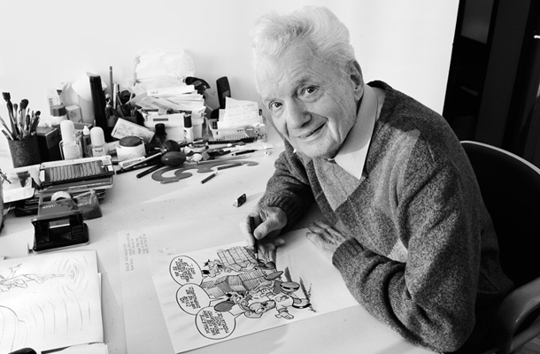

Miki Muster
Slovenski animator, ilustrator, stripar, kipar, novinar in filmski režiser

Miki Muster (1925 - 2018) s svinčnikom in z junaki iz stripa Zvitorepec
Stripografija
- 1996 Dogodivščine Zvitorepca, Lakotnika in Trdonje. 1, Turki, Turki
- 1996 Rajzolt mesék. 1, Törökök, Törökök
- 1996 Dogodivščine Zvitorepca, Lakotnika in Trdonje. 2, Zelena dolina
- 1996 Dogodivščine Zvitorepca, Lakotnika in Trdonje. 3, Trubadurji
- 1996 Dogodivščine Zvitorepca, Lakotnika in Trdonje. 4, Gusarji
- 1997 Martin Krpan v stripu
- 1998 Dogodivščine Zvitorepca, Lakotnika in Trdonje. 5, Kamena doba
- 1998 Dogodivščine Zvitorepca, Lakotnika in Trdonje. 6, Grajski duhovi
- 2010 Zbirka Miki Muster. 1, 1952-1955
- 2010 Zbirka Miki Muster. 2, 1955-1957
- 2010 Zbirka Miki Muster. 3, 1957-1959
- 2011 Zbirka Miki Muster. 4, 1959-1961
- 2011 Zbirka Miki Muster. 5, 1961-1963
- 2011 Zbirka Miki Muster. 6, 1963-1965
- 2012 Zbirka Miki Muster. 7, 1965-1968
- 2012 Zbirka Miki Muster. 8, 1968-1970
- 2012 Zbirka Miki Muster. 9, 1970-1972
- 2013 Zbirka Miki Muster. 10, 1972-2005
- 2014 Zbirka Miki Muster. 11, 2006-2014
- 2017 Martin Krpan v strip